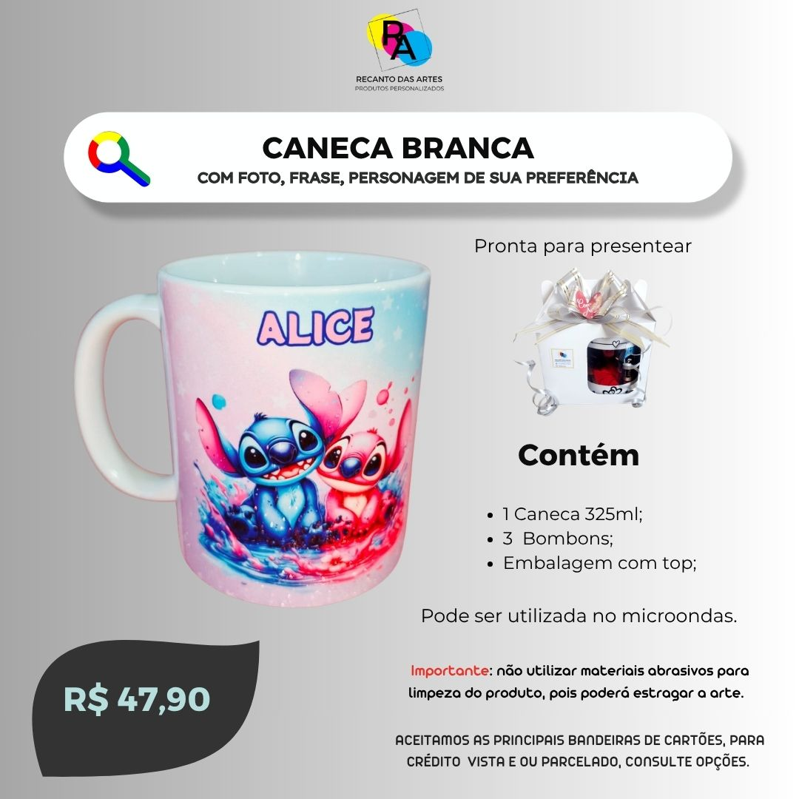
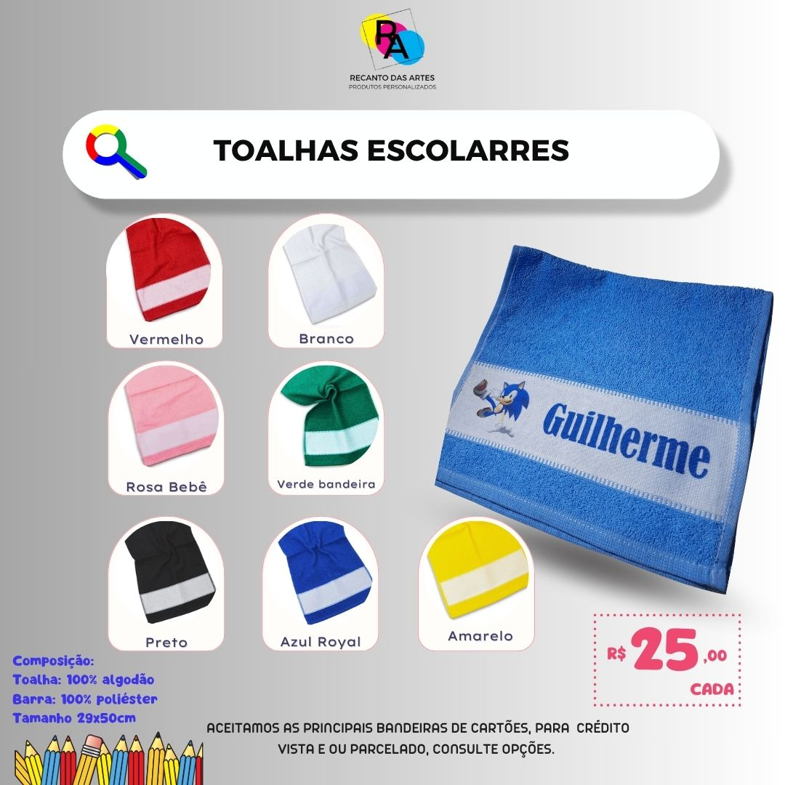

Planner A5 Exclusivo
100 folhas, capa exclusiva e miolo funcional.
De R$ 69,90
Por R$ 59,90
Ver Detalhes

Você imagina, nós criamos com carinho e acabamento exclusivo.
100 folhas, capa exclusiva e miolo funcional.

325ml com bombons e embalagem presenteável.

100% algodão com barra estampada personalizada.
100% Poliester com aplicação da arte personalizada nos tamanhos A4.
| Produto | Prazo de Confecção | Forma de Entrega |
|---|---|---|
| Planner A5 Exclusivo | 3 a 5 dias úteis | Correios ou Retirada |
| Caneca Personalizada | 1 a 2 dias úteis | Correios ou Retirada |
| Toalhas Escolares | 2 a 4 dias úteis | Correios ou Retirada |
| Camisetas Personalizadas | 3 a 5 dias úteis | Correios ou Retirada |
Deseja uma arte exclusiva para sua empresa ou evento? Entre em contato conosco: